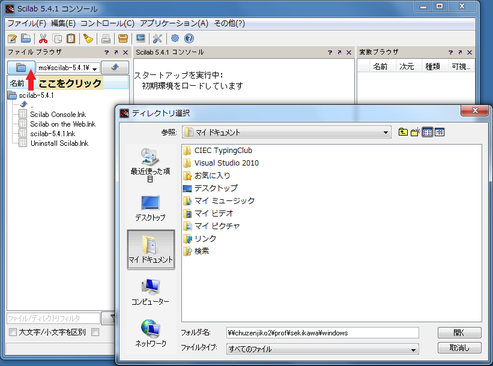
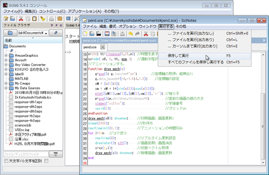
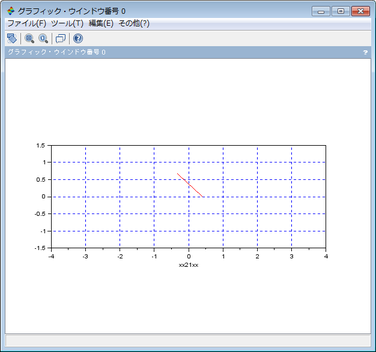

プログラム・ファイルの実行
【重要！】ディレクトリ選択
プログラム実行前に，必ず，Scilab コンソールの作業ディレクトリ(フォルダ)を「ドキュメント」に変更する。
#### ディレクトリとは？
- フォルダの別称である．
- Windows以外の環境では(特にUNIX)，フォルダのことをディレクトリと呼ぶことがある．その名残と思われる．

プログラム・ファイルの実行
sciNotes の「実行する」メニューから「保存して実行」を選ぶと，プログラムを実行できる．

実行してしばらくすると，次のような「グラフィック・ウィンドウ」が立ち上り，台車型自立ロボットの運動がアニメーションされる．
